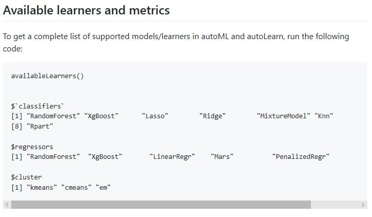

Introduction
One of the things you can assume about HR Analytics (“Data Science being applied to HR management and decision making” or “Data-Driven HR”) is that this field is not standing still. Things are changing all the time, and this reflects the fact that things are changing constantly in the three fields from which HR analytics draws upon:
Data Science and Statistics
HR
Information Technology
We don’t go too far down the path of HR Analytics before we realize that there are frameworks out there that guide our thinking and help us place ourselves in this gigantic landscape of analytics:
One of those frameworks is the “Life Cycle of A Data Science Project” in Nina Zumel and John Mount’s book “Practical Data Science With R”. It provides us with a conceptual process that helps us start at the beginning and end at the end of our efforts.
Another helpful framework from a variety of sources on the internet has been to understand the various types of analytics we can engage in our data science efforts:
Descriptive Analytics
Diagnostic Analytics
Predictive Analytics
Prescriptive Analytics
We know that descriptive analytics concerns itself for the most part on answering the questions of what have in our population of data (or what happened in the case of historical data). It covers the activities of ‘data cleansing’, as well as understanding the ‘distribution of the data’ for each of the fields we’ve captured. And this could be considered as the ‘first level’ of EDA ‘Exploratory Data Analysis’. Often it looks as each field separately.
We know that diagnostic analytics is often thought of as the ‘second level’ of EDA. It concerns itself with answering the questions of why or how in the data. It does this through looking at the relationship of the fields in the data- both relationships between independent variables, or between independent variables and a dependent variable. It often goes beyond the descriptive statistics used at the previous level of analytics and delves into many of the statistical procedures found in multivariate statistical analysis.
When it comes to answers to HR or business questions that require us to predict some value (present or future) or determine the best fit category of something that is currently uncategorized, or even to figure out some naturally occurring groupings where there currently aren’t any, this is the domain of predictive analytics.
This is the focus of ‘machine learning’- building predictive models which hopefully produce a high level of accuracy based on patterns it finds in data.
Often- prescriptive analytics can be tied into predictive, in that, when a good predictive model is found, we may want to play with it and vary its input to see how well the relationship holds for trying to get to point of optimizing a particular ‘desired’ outcome. There may be other definitions for this, but this one makes the most sense to me.
The sharing of all of this serves as a reminder to us as to why machine learning is important and re-acquaint us to where it fits into our analytics endeavors. To help us understand what automated machine learning is, it’s useful for us to revisit what traditional machine learning is.
What is Traditional Machine Learning?
These are relatively representative steps:
We have an organizational problem that needs a solution.
We have a hunch, theory, or hypothesis as to what may be causing the problem
We look for and gather data that we think is relevant to the problem
We organize this data in such a way that it contains a target outcome that we are trying to predict, along with all those pieces of information that might be predictors.
We need to determine whether the problem is to predict a numeric value or categorize something to known categories that is new, or whether we are attempting to determine naturally forming groups in the population of data that we have for the first time. These are some of the major categories that machine learning algorithms fall into. And there are others are well.
When we know the category of business problem and therefore the category of machine learning algorithms that is applicable, we then run our data through a wide variety of machine learning models/algorithms within ‘that’ category of models to figure out whether any of them do an acceptable job of predicting and, if so, how well. Different models and categories of model use different statistics to do this. But generally, in each category of models, the evaluation of such models typically is able to be done because the statistical outcomes measures will often be able to be expressed in ‘common denominator’ measures allowing for cross comparison.
If you look at the sheer number of machine learning algorithms out there, and if you want to be thorough, you realize that this is a time consuming, interactive, and necessary process. You have to review all the models you have created to determine which is the best performing and whether that performance is good enough for use and application to your real-world problem.
Up till recently your choices would have been to run:
all these models manually by generating the code necessary to run them
or if you were fortunate enough to find a machine learning GUI you could pick the models to be run and have the GUI generate the code for you.
And you would still need to evaluate from all the output which was the best model/algorithm to use of the data. These are all valuable and necessary steps.
But what if these steps didn’t have to be this manual /people intensive? This is what automated machine learning is all about.
What is Automated Machine Learning?
A very good definition can be found at Wikipedia:
https://en.wikipedia.org/wiki/Automated_machine_learning
In brief it says:
Automated machine learning (AutoML) is the process of automating the end-to-end process of applying machine learning to real-world problems… Automating the end-to-end process of applying machine learning offers the advantages of producing simpler solutions, faster creation of those solutions, and models that often outperform models that were designed by hand.
In effect it automates many of the above steps for you:
You tell it where the data is, that you want to be analyzed.
You tell it whether there is a target to be predicted, and if so, which field is to be predicted
It often regards all other fields as potential predictors unless you direct it otherwise
It looks at the target that is to be predicted, determines whether it is numeric or categorical, then figures out all applicable algorithms that can be run (that it is designed to run) and runs them
It then looks at the summary evaluation statistics to determine which is the best model
Some of the solutions in this area for doing automated ML even give you a ‘leaderboard’ showing the performance of the models in reverse order showing the best first and the next best etc.
How does this benefit HR Analytics?
As above:
Simpler solutions
Faster creation
Higher performance models
If you are like me, with a passion for HR Analytics, having an HR issue or problem and data available, is like being a kid in the candy store. Data mining gives the opportunity to find hidden treasures- patterns in your data- that maybe no one has seen up until you found them. There can often be a tug-a-war between wanting to find patterns (if they exist) as quickly as possible and wanting to more slowly and methodically extract as much value as you can out of your data.
In some ways, Automated Machine Learning can be a solution for both. You can get at some gems very quickly if they are there, and this frees up a lot of time to do very in-depth additional analyses.
What are some of the automated machine learning options out there?
There are probably many more out there than what I will mention. But I will share with you some of the ones I have recently come across. Some of these appear to be pretty polished, some are work in progress to varying degrees, and some are both. Even the ones I have looked at will evolve further over time.
The 3 that I will share some details about are:
autoML library in R
h2o.ai
ml.net from Microsoft
Each of these has some similarities, but also have differences in their approaches/goals.
R autoML
R autoML is as the name suggests an R library and therefore uses R syntax. Information on it can be found at:
https://github.com/XanderHorn/autoML/wiki
On that page, are links to a few tutorial examples of how to use it.
https://github.com/XanderHorn/autoML/wiki/Tutorial:-autoML-supervised-learning
https://github.com/XanderHorn/autoML/wiki/Tutorial:-autoML-unsupervised-learning
As implied earlier, it simplifies things, by having you indicate what the dataset is, what it the target to be predicted in that dataset ,and you can either specify the models you want to run, or you can specify ‘ALL’ to run all that have been built into autoML that are relevant to the target you are predicting. It then runs all the machine learning models and provides a ‘summary’ of each of the models tested in a tabular form so that you can easily and conveniently determine which is the best performing model. While it is running and comparing models you can go grab a cup of coffee and allow it to do the ‘grunt’ work for you.
The various algorithms it uses are

Here is some sample R autoML code:
The models could have been changed to be “All” to run multiple models.
The thing to pay attention to is that in the above syntax all you had to specify was the target- that which was to be predicted, an ID field if there, and the dataset name- it knows then that all other fields are to be treated as potential predictors.
When you look at the R autoML example links above, it shows the nature of the results produced- including a summary leaderboard of the results of the models run.
H2o.ai
H2o.ai seems to be a very polished, powerful and flexible solution at this point. It is somewhat unique as a product because it can be run from R, Python, or from a Java web front end. The library backend itself is written in Java. You can even run your models from R or Python review the output there and then switch to the web-based front end to look at even more output in h2o from the same run you just ran in R or Python.
It can be found at:
https://www.h2o.ai/products/h2o/
Some of the algorithms it used are:
Supervised
Unsupervised
There are others as well in their documentation.
This is another one of the automated machine learning solutions that produces a ‘leaderboard’ showing a summary of all the models it ran and their performance ranking them from highest to lowest. This allows you to zero in on the best predictive model very quickly.
Just as an example, I took a file that had just short of 50,000 records and ran it through all applicable algorithms that h2o has built in. It took about 45 minutes to number crunch through the dataset and all the models (20 or more). Manually it would have taken days to accomplish this coding up one model/algorithm at a time.
Some example R h2o code;
And here is a sample of its ‘Leaderboard’ output:
I had mentioned earlier that you could also run h2o from a web-based front end. This is what it looks like- and you will notice the runAutoML choice among others:It presents you with a GUI interface to run automated machine learning:
And as I mentioned previously, it also allows you to view the results you originally generated from R:
You will notice that the top model in the RStudio console window is listed the h2o window beneath it. In the h2o window, you can click on the model link to get much more details.
ML.NET from Microsoft
During the Microsoft Build 2019 conference, Microsoft announced version 1.0 of ML.NET – and along with that a prototype (still in development) of its own automated machine learning solution (ML.NET Model Builder).
What makes their offering a little different is that their target seems to be to integrate machine learning algorithms into their more mainstream .Net application development. Their solution doesn’t use R or Python or Java but C# as the programming language.
It too runs a series of relevant algorithms after you specify the dataset and indicate which field is the target to be predicted. It then creates a zip file of the encapsulated model along with the code necessary to run new data through it. The code is C# code. You can then marry this up with other .NET technologies to create a web front end - for organization use. This allows for the real embedding of machine learning in organizational processes.
Here is the current prototype interface
It too, asks simply for target variable and dataset name and figures out much of the rest:

All three of these solutions allow for the creation of machine learning models which can, in turn, be used to predict on ‘new’ data which it hasn’t previously seen.
It isn’t my purpose in this blog article to dive too much into the ‘how-to’ or the ‘full’ details of the steps and output. Each of these alternatives is extensive in its own right - meriting separate blog articles to show more details. I may, in upcoming blog articles, show how to use each of these automated technologies.
For those who have read my book:
and its examples, it would be fun to apply these auto machine learning solutions on those examples - that were done the more traditional way.
Does This Negate Traditional Machine Learning?
My own take on this is – ‘definitely not’.
Each of the above tools, especially at this point, has a specific set or subset of machine learning algorithms that it runs to find the best one. And any time you try to automate this activity there will be some restrictions in that scope, especially if the interface is a GUI front end.
To get a better sense of the scope of these above automated tools I compared their choice of algorithms with those found in the R caret library which has a reasonably extensive collection of predictive models to choose from - on a more manual coding basis. These can be found at:
https://topepo.github.io/caret/train-models-by-tag.html
and
https://topepo.github.io/caret/available-models.html
The above automated machine learning solutions cover many of the more well-known algorithms or categories listed. But my sense is, that after the use of the automated tools to zero in on the best fitting models or categories-one could still explore further with more manual effort.
Wrap-Up
At the beginning of this blog article, I posed the question of whether the developments in automated machine learning could benefit HR Analytics?
For me, the answer is a resounding ‘YES’.
The use of automated machine learning can cut down significantly the time to determine whether the data we have has meaningful patterns from which predictions, where necessary to solve an HR issue or problem, could be made.
The quicker that we are able to ‘zero-in’ on ‘best’ performing models, the quicker we can get to and spend more time in the detailed understanding and analysis of our data - to make high-quality changes to our HR decision making and management.
I hope this blog article has got you at least a little bit excited about the prospects of how this will benefit HR Analytics as things progress.